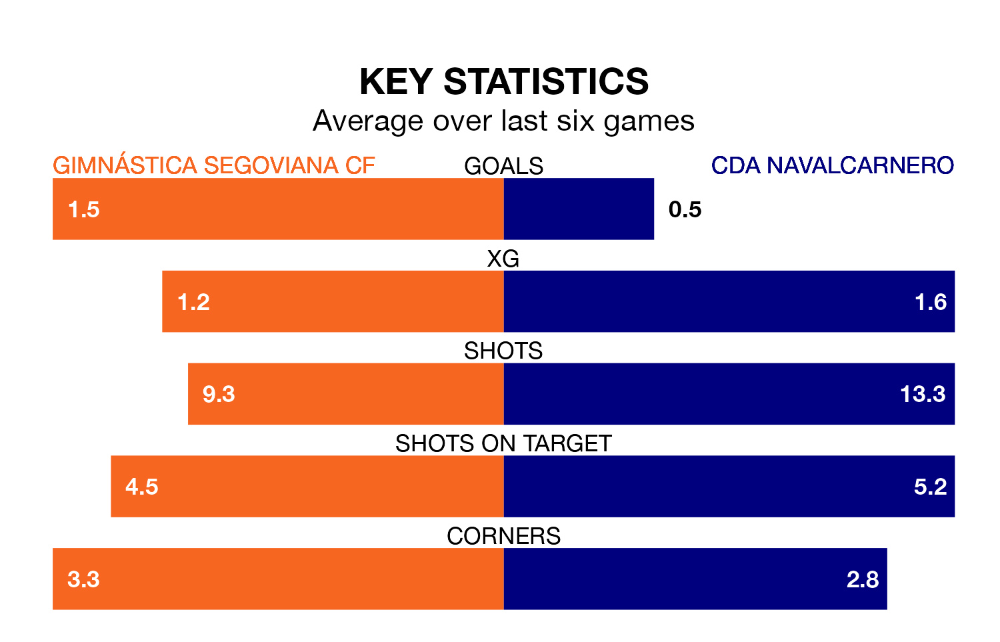

CDA Navalcarnero travel to Estadio Municipal de La Albuera looking to secure a first win in 11 Segunda División RFEF Group 5 games against Gimnástica Segoviana CF on Sunday.
CDA Navalcarnero have lost seven and drawn three matches since they last earned three points – against CD Badajoz on October 22.
They face a Gimnástica Segoviana side who have won five and drawn two over that time.
CDA Navalcarnero are 16th in the table after 18 games, of which they have won three and drawn six, earning 15 points.
Gimnástica Segoviana are nine places ahead of the away team in seventh, with seven wins and seven draws putting them on 28 points.
With 15 goals in 18 games so far this season, CDA Navalcarnero are scoring at below the league average rate with 0.8 goals per game. And they are conceding more than average, letting in 24 goals at a rate of 1.3 per game.
The hosts, meanwhile, are above average scorers, with 1.2 goals per game, compared to a league average of 1.1. They have conceded 0.9 goals per game.
In the last 10 years, Gimnástica Segoviana and CDA Navalcarnero have played each other on seven occasions. Gimnástica Segoviana won two of them, CDA Navalcarnero three, and they drew twice.
On average, Gimnástica Segoviana scored 1.3 goals and CDA Navalcarnero 1.4 in those matches.
Their last meeting was on September 10, when they played out a 2-2 draw.
Gimnástica Segoviana's last match was on January 14, a 3-1 loss against CD Numancia.
CDA Navalcarnero lost 2-0 against CP Cacereño last time out, also on January 14.
Updated: 14:53 (UTC), 16/01/24